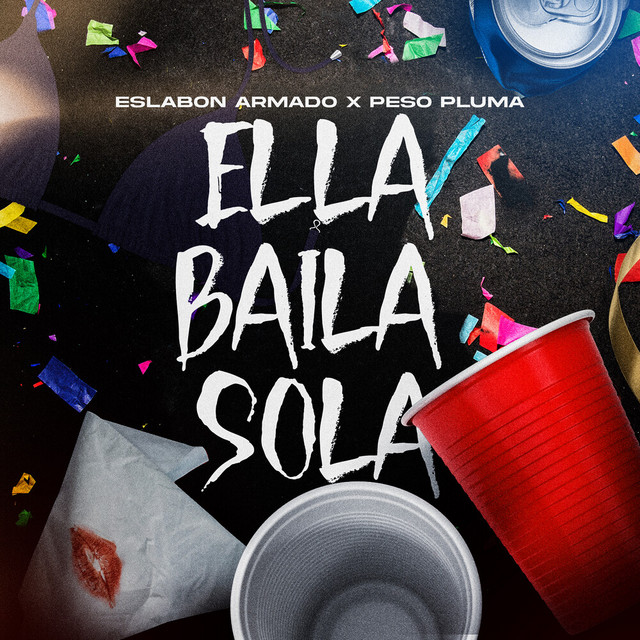
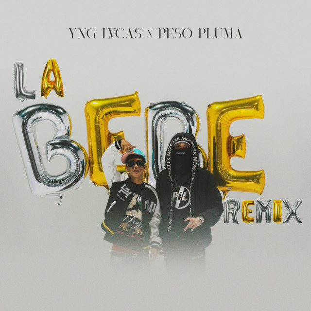
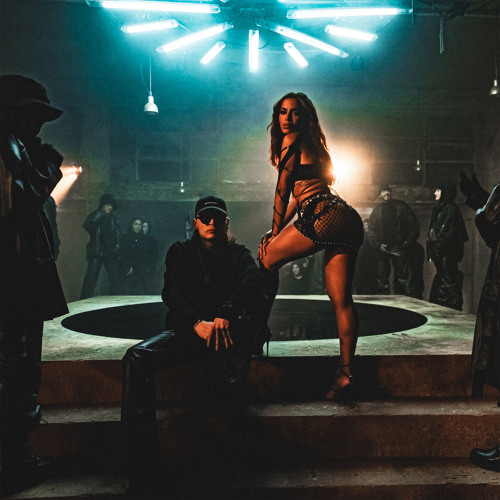
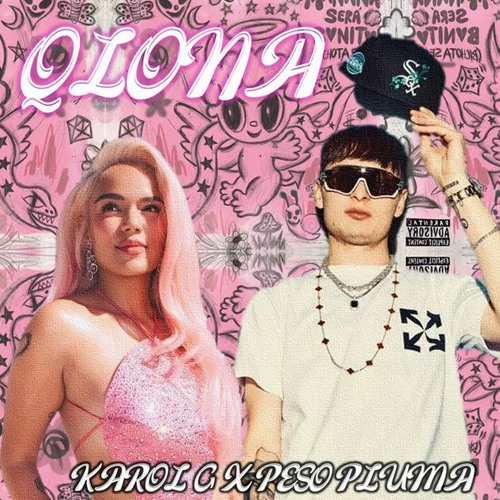
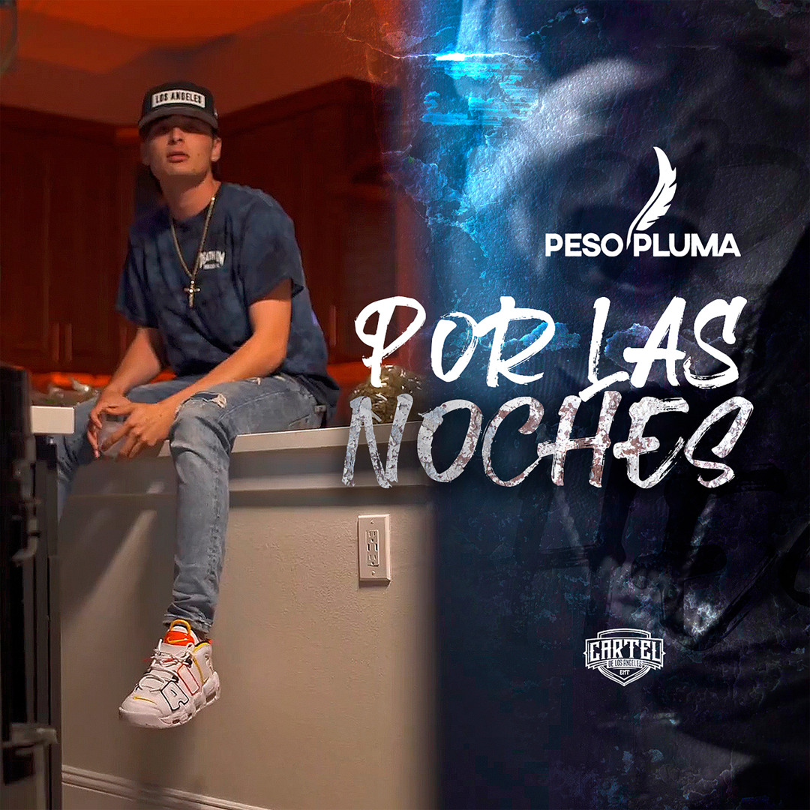

| FOTO | CANCION | LETRA | VIDEO |
|---|---|---|---|
 |
Ella Baila Sola | Compa ¿Qué le parece esa morra? La que anda bailando sola, me gusta pa mí ¡Bella! Ella sabe que está buena Que todos andan mirándola cómo baila Me acerco Y le tiro todo un verbo Tomamos tragos sin peros, solo tentación Le dije "Voy a conquistar tu familia Que, en unos días, vas a ser mía" Me dijo Que estoy muy loco, pero le gusta Que ningún vato como yo actúa Y ahí te va, mija ¡Y pura Doble P, viejo! Así nomás, compa Pedro, puro Eslabón Armado Pa las plebitas ¡Cha-chau! No soy Un vato que tiene varo Pero hablando del corazón, te cumplo todo Me agarro Pegadito de su mano Mi compa ni se la creyó que al pasar fui yo Su cuerpo Juro, por Dios, que era tan perfecta Su cinturita como modelo Sus ojos Desde el principio me enamoraron A ella le gusto y a mí me gusta | Ver video |
 |
La bebe | Con la gorrita de lado, los ojos tumbados y cargo un placón Loco cabrón, así me dicen que soy Los plebes andan ondeados, si bajan los vidrios, un humaderón Sale el olor a pura flor Tengo llamadas perdidas, mi morra ya varias veces me marcó Quiere que ya me regrese pa'l cantón Y que la dé por perdida, no hay pedo, aquí tengo a su amiga a un lado Y lo mueve mucho mejor, mucho mejor No te tengo aquí, a mi lado, pero me la paso chingón Van cuatro días enfiestado, encerrado, traigo un loquerón Un loquerón, no es por amor el loquerón Tito Double P El loquerón, mi pa Ay, mamá Pata a fondo, acelerado, bien adiamantado, traigo el Rolexón Y atrás de mí viene un convoy (convoy) Los plebes andan ondeados, las puntas por fuera, se ve el blindadón Y en el depa un reventón Ya empezó y pónganse pilas, que las bandidas llegarán en calor Y ahí vienen dos pa' Miguelón No se me duerma, plebada, que ahí vienen morritas de medio millón En el TikTok, de lo mejor, de lo mejor No te tengo aquí, a mi lado, pero me la paso chingón Van cuatro días enfiestado, encerrado, traigo un loquerón Un loquerón, no es por amor el loquerón | Ver video |
 |
bellakeo | Voy a manejar mi troca por la madrugada No alcancé a despedirme porque no pensaba Que la muerte me esperaba, me tomó del brazo Gracias por sus oraciones, ya estoy descansando Descansando, recordando Todo lo bueno de la vida que fui gozando Voy a abrazar mi padre cuando sople el viento Voy a besar a mi madre cuando llueva recio No olvidaré a mis pequeñas, mi mayor tesoro Carnal, cuidalas, es lo que pide este morro El fue Arturo, por seguro Les prometo que estaré en cualquier segundo Desde el cielo yo los veo La clika que no me extrañe pues acá nos vemos Y este corridito se va hasta la 'H' Descansa en paz mi compa Arturo Pura Fuerza Regida viejo ¡Otro Pedo! Hoy tomaré una cerveza junto a mis panas Compa Federico sabe que hubo buenas charlas Mi troca la más chingona en todo Houston, Texas Ya no podré pilotearla, es lo que más me pesa Pues me pesa, su belleza Las carreras, las llantas, el humo y vida recia Carnal Alan, cabrón, llévatela más tranquilo Los cuatro en la bola saben que fui buen amigo Cuando suenen los motores de las mamalonas Recuerden al Arturillo con toda la bola Ya es la hora que me vaya Tal vez no regrese pero antes que parta Les recuerdo que los quiero Me fui bien alegre montado en mi ranfla Ahuevo viejo | Ver video |
 |
qlona | Ranfla nueva, 2026 La que llegó, llegó Y la que no, se fue ¿Que te quiero? Quién sabe ¿Que te extraño? Tal vez Así nomás y discúlpeme usted Pero pasteleado no me como el pastel Se agüitó conmigo y regresó con su ex Todas vuelven, pa, mientras haya con qué Casi no la ubico, la conozco al revés No hay falla, siempre me dice sipis Nunca la hace de picky Mientras se lo haga riqui (riqui) Bien guay, no traigo los ojos hippies No me estorba el fierrosqui Se van a quedar friskies (friskies) No hay falla, siempre me dice sipis Nunca la hace de picky Mientras se lo haga riquis (riqui) Bien guay, no traigo los ojos hippies No me estorba el fierrosqui Se van a quedar friskies ¿Dónde y cuándo? Ando cazando Parche y risky levantando Yo soy gente de Don Leandro Marihuando, dando y dando Me enganché y no me casé Me la aventé porque estaba dos, tres No regresé, porque ya me la sé No hubo ni cena, ¿pa' qué? Ahora ya estrenamos como Pablo caleta' La que va marchando la apunto en la libreta Y no soy de to', pero tengo la receta Si nos baila ahorita, baila pa' la vuelta Tu perro culazo, de esos que no respetan Pa' mi desayuno, un culito de princesa No le hagan la reta, no ocupamo' etiqueta' No la muevas mucho porque se me inquieta No hay falla, siempre me dice sipis Nunca la hace de picky Mientras se lo haga riquis (riqui) Bien guay, no traigo los ojos hippies No me estorba el fierrosqui Se van a quedar friskies (friskies) No hay falla, siempre me dice sipis Nunca la hace de picky Mientras se lo haga riqui (riqui) Bien guay, no traigo los ojos hippies No me estorba el fierrosqui Se van a quedar friskies Pa' cosa' buena', parcero, la colombiana Pa' enamorarme de una, las venezolanas A pura señal me agarré una americana Y que Diosito nos libre, viejo, de las mexicana' No hay falla, siempre me dice sipis Nunca la hace de picky Mientras se lo haga riquis (riqui) Bien guay, no traigo los ojos hippies No me estorba el fierrosqui Se van a quedar friskies (friskies) No hay falla, siempre me dice sipis Nunca la hace de picky Mientras se lo haga riqui (riqui) Bien guay, no traigo los ojos hippies No me estorba el fierrosqui Se van a quedar friskies | Ver video |
 |
por las noches | Ya no quiero oírlo otra vez
Mi alma está partida en dos por ti
No me importa el fuego en el que ardo hoy
Dicen que estoy enferma de amor
Que me levanto y vuelvo a caer por ti
Cada vez que te apareces frente a mí
Porque, sin ti, no hay camino ni destino, estoy perdida
Porque, sin ti, no me importan los minutos ni los días
Porque, sin ti, no hay presente ni futuro, sálvame
De esta bella traición
Que mató mi razón
(Que mató mi razón)
Perdona si me olvido de ti
Lo siento si agoté la ilusión
No me importa el juramento que te di
Me dicen que tu amor terminó
Que solo eres una canción de ayer
Un suspiro que en el aire se quedó
Porque, sin ti, no hay camino ni destino, estoy perdida
Porque, sin ti, no me importan los minutos ni los días
Porque, sin ti, no hay presente ni futuro, sálvame
De esta bella traición
Que mató mi razón
¿Dónde estarás cuando mis labios te busquen?
¿Y dónde estará el sueño tan dulce que era de los dos?
(Fuiste mi bella traición)
Fuiste mi bella traición
Porque, sin ti, no hay camino ni destino, estoy perdida Porque, sin ti, no me importan los minutos ni los días Porque, sin ti, no hay presente ni futuro, sálvame De esta bella traición De esta bella traición De esta bella traición Que mató mi razón (Y es que tú, solo tú) Que mató mi razón |
Ver video |